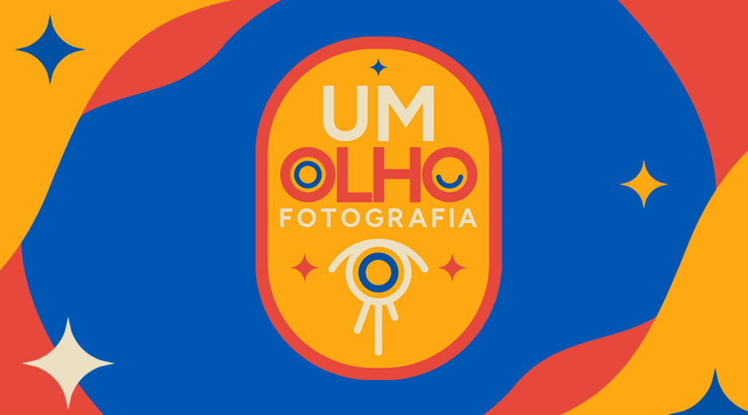
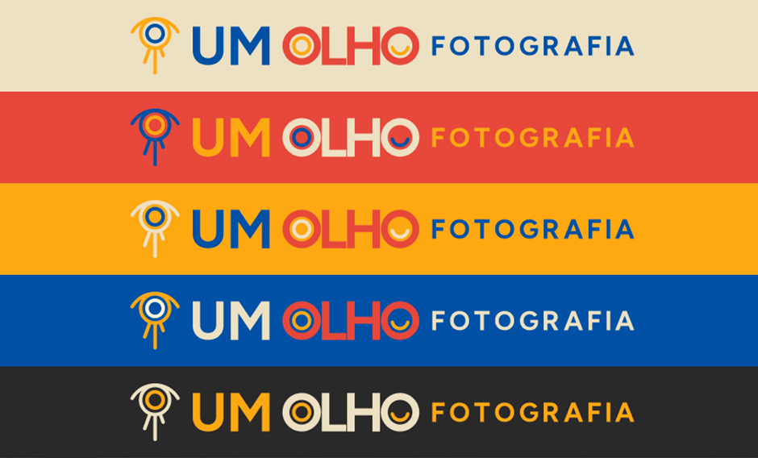
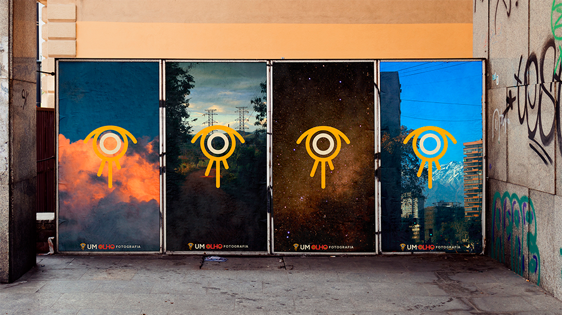
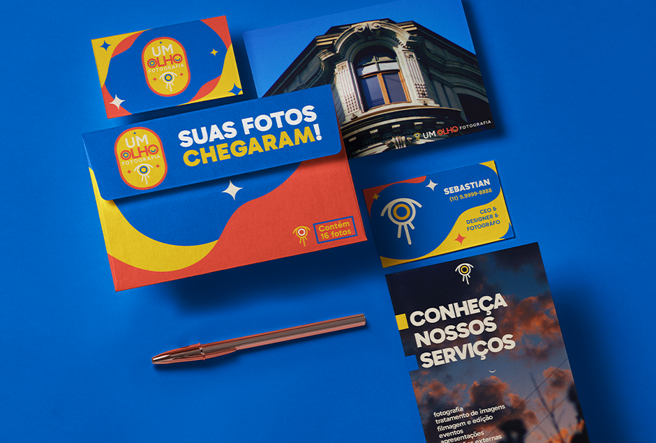
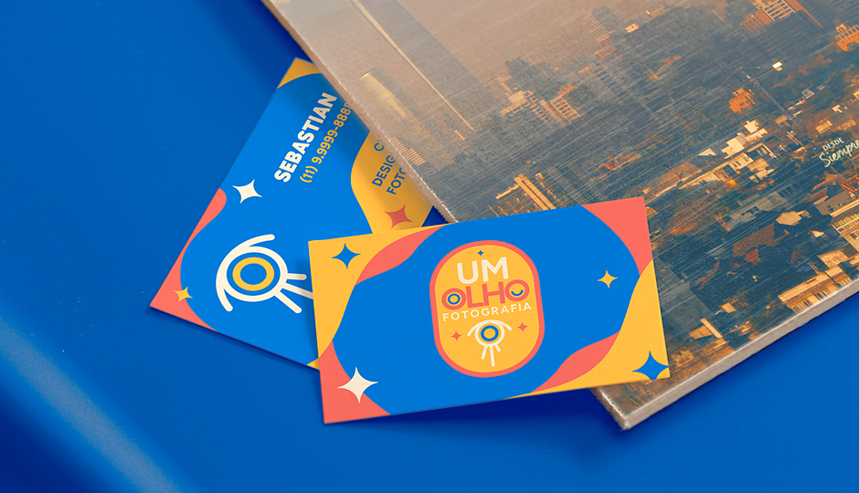
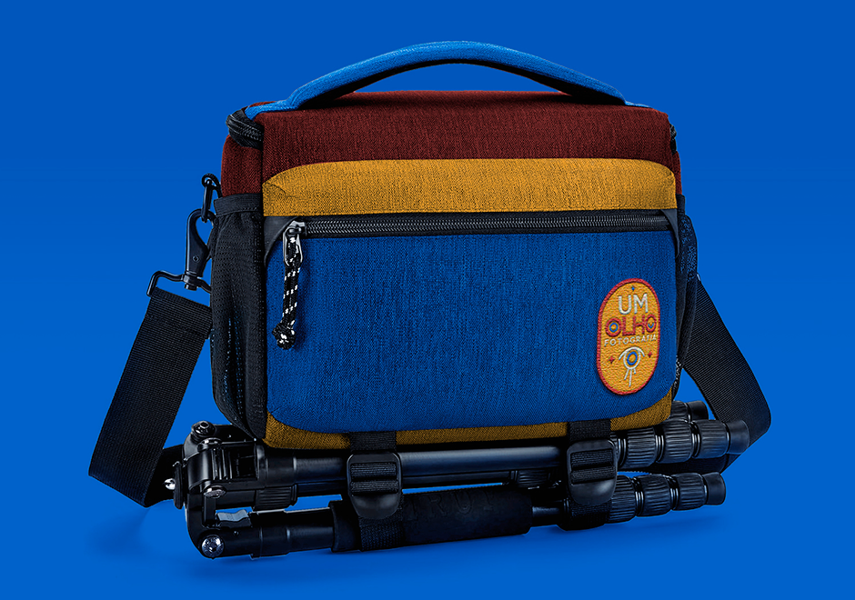

IDENTIDADE VISUAL
LOGOTIPO
O conceito da identidade da UM OLHO Fotografia vem do pequeno, mas significativo, gesto que resulta nas imagens captadas pelo fotógrafo.
A composição do ícone, além da representação gráfica de um olho, funciona como a lente de uma câmera vista de frente e inclui as três pernas de um tripé, formando também os cíclios inferiores.